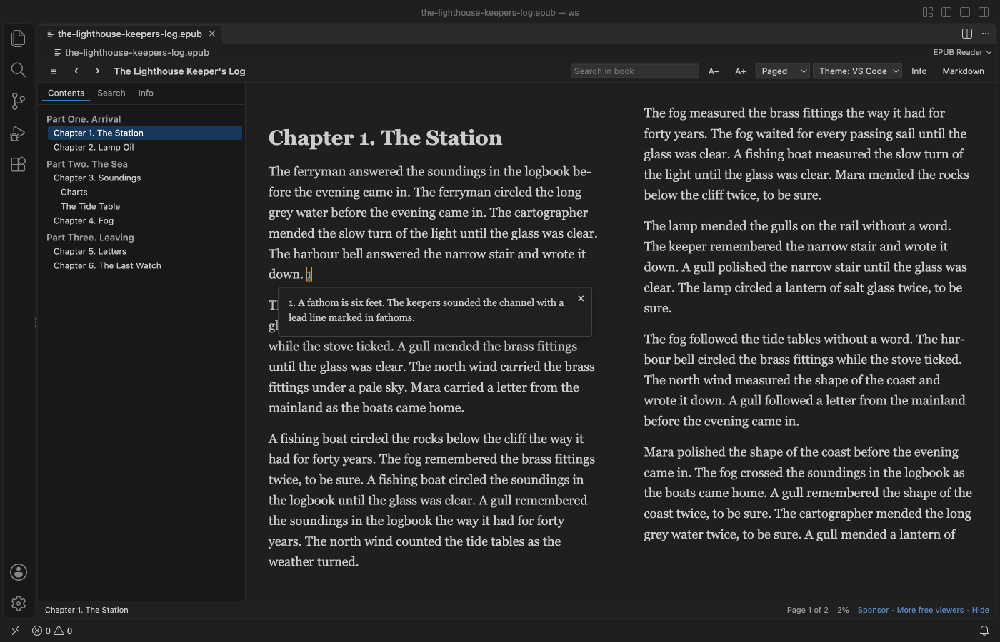

在 VS Code 閱讀 EPUB 電子書
安裝免費的 EPUB Reader，點選 .epub 檔案。書會在 VS Code 分頁中從你上次停下的頁面開啟，可以逐頁翻閱或捲動閱讀，並提供目錄、全書搜尋、註腳彈出視窗，以及 VS Code、淺色、褐色（Sepia）或深色主題。閱讀免費，而且可以離線使用。Zovo Pro（一次付清 19 美元）另外提供 Export Book to Markdown or Text 和 Check EPUB 兩項工具，每項各有 3 次免費試用。
免費，MIT 授權。擴充功能 ID zovo.zovo-epub-reader，版本 0.2.0。

在 VS Code 中的步驟
- 從 Marketplace 安裝 EPUB Reader，或按 Ctrl+P（macOS 上按 Cmd+P）後執行
ext install zovo.zovo-epub-reader。 - 在 Explorer 點選
.epub檔案。書會在分頁中開啟，停在你上次讀到的頁面。如果開啟的是其他編輯器，請在檔案上按右鍵，選擇「Open in EPUB Reader」。 - 用左、右方向鍵、Page Up 和 Page Down、空白鍵、滑鼠滾輪，或點一下頁面的右側或左側邊緣來翻頁。編輯器夠寬時，頁面會顯示成兩欄。
- 按工具列最左邊的 Contents 按鈕，選擇章節。EPUB 3 的 nav 目錄和 EPUB 2 的 NCX 目錄都能讀取，包括其中的部和節。
- 在「Search in book」輸入文字（或按 Ctrl+F，Mac 上按 Cmd+F），再按 Enter。每個符合項目都會連同所屬章節列出，並在內文中醒目標示。Enter 跳到下一個，Shift+Enter 回到上一個。
- 點註腳編號，註腳會在彈出視窗中顯示。按 Escape 關閉。
- 在工具列切換 Paged 和 Scrolled，選擇 VS Code、Light、Sepia 或 Dark 主題，並用 A− 和 A+ 調整文字大小。你的選擇會套用到每一本書。Info 會顯示封面、作者、語言和 ISBN。
哪些功能免費，Zovo Pro 又多了什麼
閱讀、目錄、搜尋、註腳彈出視窗、主題、文字大小、書籍資訊，以及把目前章節連同圖片存成 .md 檔案的 Markdown 按鈕都免費。這個擴充功能不會發出任何網路請求，書中的指令碼也永遠不會執行。
Export Book to Markdown or Text 一次寫出所有章節，可以存成一個 Markdown 檔案、每章一個 Markdown 檔案（01 - Title.md、02 - ...），或一個純文字檔案。圖片會放在 Markdown 旁邊的資料夾，而且絕不覆寫現有檔案。想把自己擁有的書拿來做筆記、引用或給自己的工具使用時，不必一章一章存檔。
使用 Export Book to Markdown or Text（Zovo Pro）
- 開啟書後，在分頁的 ... 選單中選擇「Export Book to Markdown or Text (Pro)」，或在 Explorer 對
.epub檔案按右鍵，從那裡選擇。 - 也可以從 Command Palette 執行「EPUB Reader: Export Book to Markdown or Text (Pro)」。它會使用目前開啟的書，或請你選擇一個 EPUB 檔案。
- 選擇「Markdown, one file」、「Markdown, one file per chapter」或「Plain text」。存成單一檔案時，選擇儲存位置。每章一個檔案時，檔案會存到書旁邊一個名為
<book name> (Markdown)的新資料夾。 - 只有檔案寫入後才算一次試用，按 Cancel 或 Escape 不會用掉。
Export Book to Markdown or Text 在你的電腦上可以免費使用 3 次，之後才需要授權。不會跳出彈出視窗，也沒有倒數計時。
Zovo Pro 一次付清 19 美元，不是訂閱制。授權會啟用所有 Zovo 擴充功能的 Pro 工具，不只是 EPUB Reader。以信用卡（Stripe）付款後，下一個頁面會顯示你的授權金鑰。在 VS Code 的 Command Palette 執行「Zovo Pro: Enter Zovo Pro license key」，再貼上金鑰即可。金鑰在你的電腦上驗證，不需要連線到網路。透過 GitHub Sponsors 付款時，請選擇 "$19 one time" 方案，再執行「Zovo Pro: I already paid: unlock with GitHub Sponsors」。
5 人團隊一次付清 59 美元（以信用卡付款）。 所有規則和 Pro 工具都在 Zovo Pro 頁面上（英文）。
在 Cursor、Windsurf 或 VSCodium 中的步驟
- 按 Ctrl+Shift+X（macOS 上按 Cmd+Shift+X）開啟 Extensions 檢視。
- 搜尋
zovo.zovo-epub-reader並按 Install。Cursor、Windsurf 和 VSCodium 從 Open VSX 安裝擴充功能，這個擴充功能在那裡的名稱是zovo/zovo-epub-reader。 - 如果編輯器沒有擴充功能市集，請在 Open VSX 頁面下載 .vsix 檔案，再執行「Extensions: Install from VSIX...」。
- 之後的用法和在 VS Code 中一樣。
EPUB Reader 能做什麼
- EPUB 2 和 EPUB 3 書籍，可讀取 EPUB 3 nav 或 EPUB 2 NCX 目錄。
- 註腳和章末註以彈出視窗顯示，即使它們放在另一個註解檔案中也可以。
- 大型書籍。只會從磁碟讀取你開啟的部分，一本 400 章的測試書大約 1 秒就開啟。
- 書籍資訊，包括封面、書名、作者、語言、ISBN、出版者、日期和 EPUB 版本。
- 來自網路的任何書籍。指令碼、事件處理常式、表單、框架、行內樣式和遠端圖片都會在顯示頁面前移除。
它做不到的事
- 無法開啟有 DRM 保護的書。這類書會顯示清楚的訊息，而不是亂碼。
- 不會套用書籍本身的樣式表和內嵌字型。
- 漫畫、繪本等固定版面的書會顯示成流動排版，原本的頁面設計會消失。
- 不會顯示音訊、影片和行內 SVG 圖形。以圖片方式顯示的 SVG 封面或插圖可以正常顯示。
- 搜尋一次只在一個章節中進行，所以跨兩章的詞句找不到。超過 200 MB 的書不會讀取（設定
epubReader.maxFileMB）。
常見問題
可以開啟 Kindle 或有 DRM 的書嗎？
不行。有 DRM 保護的書會顯示清楚的訊息，而不是亂碼。它只開啟 .epub 檔案，所以 AZW 或 MOBI 等 Kindle 格式無法讀取。
會記得我讀到哪裡嗎？
會。每本書都會從你上次讀到的頁面開啟。這些位置只存在這台電腦上 VS Code 的本機儲存空間。
免費嗎？
閱讀、搜尋、註腳、主題、書籍資訊，以及把單一章節匯出成 Markdown 都免費。兩項 Pro 工具 Export Book to Markdown or Text 和 Check EPUB 各有 3 次免費試用，之後需要 Zovo Pro，一次付清 19 美元，可用於所有 Zovo 擴充功能。
可以在 Cursor 使用嗎？
可以。EPUB Reader 在 Open VSX 上的名稱是 zovo/zovo-epub-reader，所以 Cursor、Windsurf 和 VSCodium 都能安裝。
延伸閱讀
英文版指南有更多細節和其他做法。每項功能和設定都寫在 EPUB Reader 的頁面上（英文）。
內容已於 2026 年 11 月 13 日對照 Marketplace 目前的版本查核。